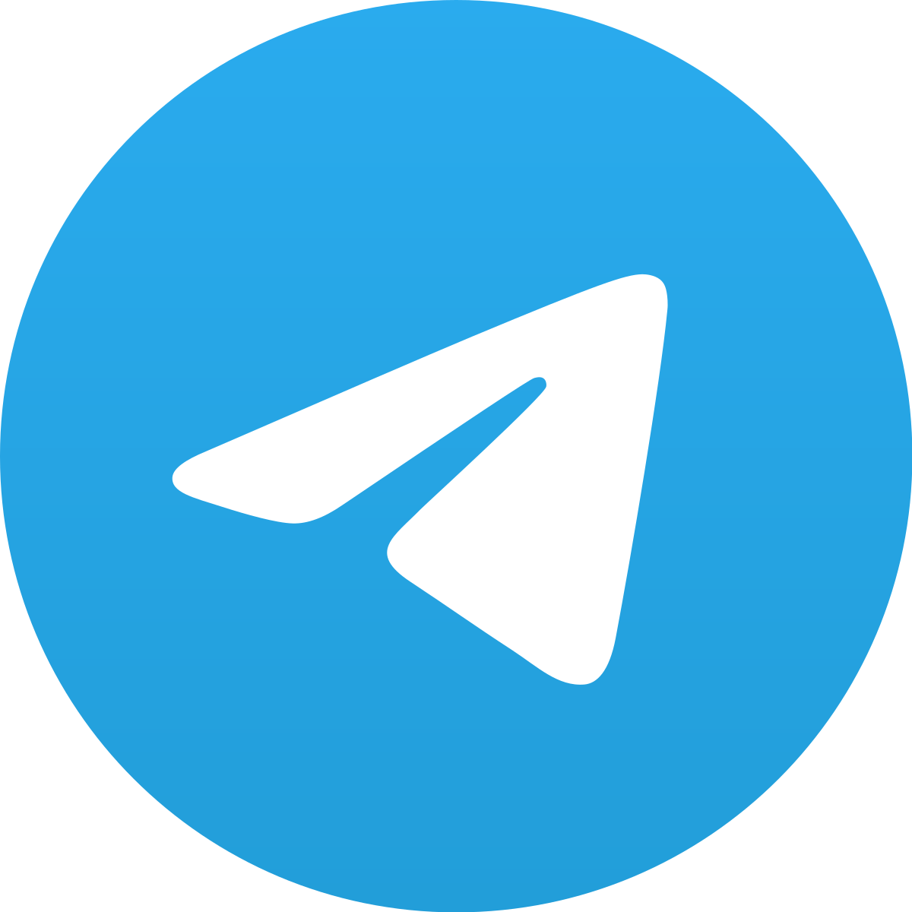
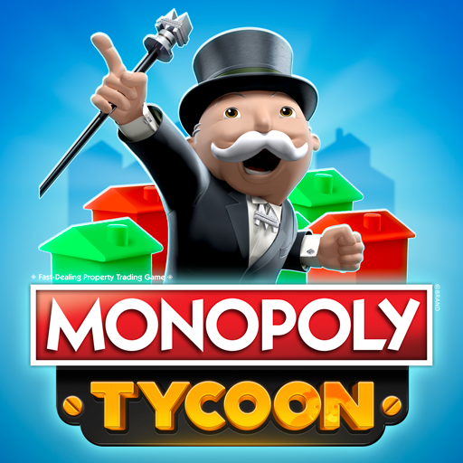
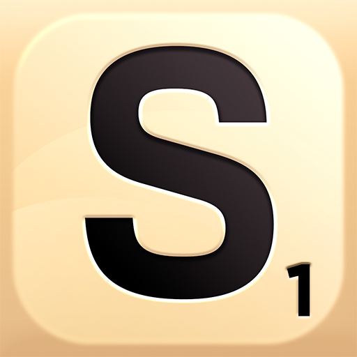
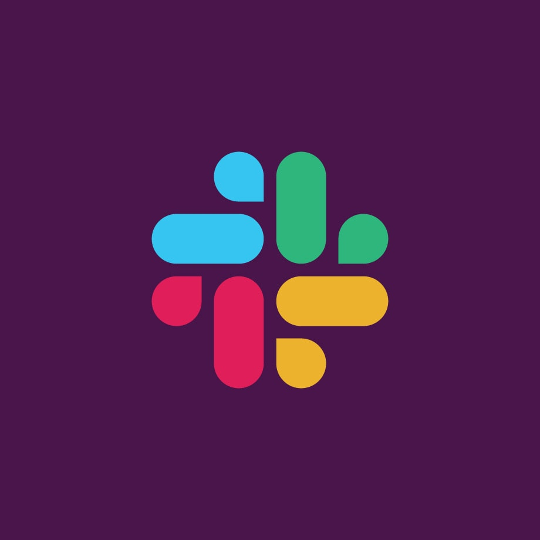
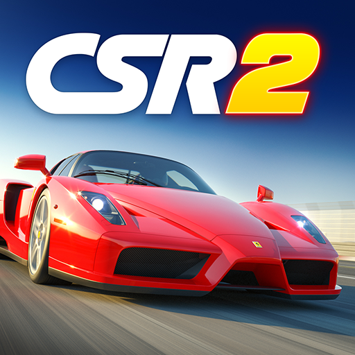
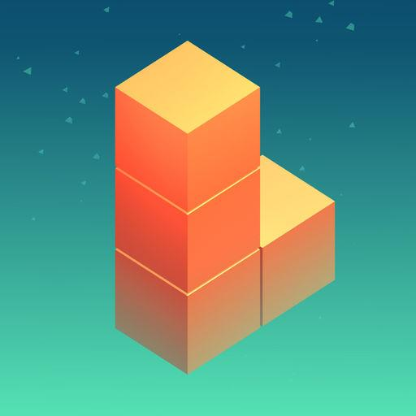
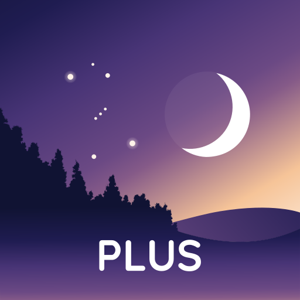
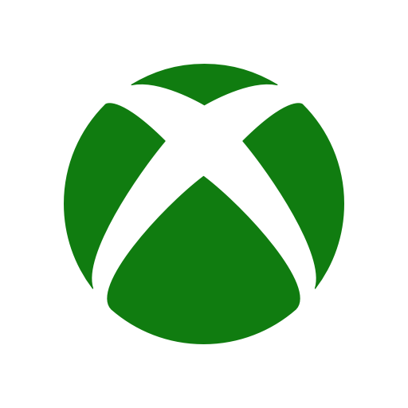

Fifa™
CSR Racing 2™
Slack
Simcity™
Aplicaciones populares

Slack
Slack es un conjunto basado en la nube de herramientas y
servicios de colaboración en equipo patentados, fundado por
Stewart Butterfield. Slack comenzó como una herramienta
interna utilizada por su empresa, Tiny Speck, en el desarrollo
de Glitch, un juego en línea ahora desaparecido.

WhatsApp es una aplicación multiplataforma de mensajería
instantánea y llamadas de voz para teléfonos inteligentes.
Además de la mensajería de texto, los usuarios pueden enviar
imágenes, videos y documentos PDF, así como realizar llamadas
gratuitas a través de una conexión a Internet.

Telegram
Telegram es un servicio de mensajería instantánea basado en la
nube. Telegram está disponible para teléfonos inteligentes o
tabletas, computadoras y también como aplicación web. Los
usuarios pueden enviar mensajes e intercambiar fotos, videos,
pegatinas y archivos de cualquier tipo.
Trello
Trello es una aplicación de gestión de proyectos basada en web
creada originalmente por Fog Creek Software en 2011. En 2014
se convirtió en una empresa. Opera un modelo de negocio
Freemium, en el que la versión gratuita o de pago se pone a
disposición del usuario.

Skype
Skype es un software que permite la comunicación a través de
Internet a través de conexiones de voz y video, creado por
Janus Friis y Niklas Zennstrom. Skype se lanzó en 2003. En
2005 se vendió a eBay y es propiedad de Microsoft desde mayo
de 2011.
Juegos populares

Minecraft
Minecraft es un juego de mundo abierto, y no tiene un fin
claramente definido. Esto permite una gran libertad en cuanto
a la elección de su forma de jugar. A pesar de ello, el juego
posee un sistema que otorga logros por completar ciertas
acciones.

Monopoly Tycoon
Monopoly Tycoon es un videojuego basado en el juego de mesa
Monopoly, publicado en 2001. Sin embargo, en vez de usar
dados, el juego confía más en la velocidad e innovación de los
jugadores. En el modo estándar, el usuario juega contra los
opositores AI. En la versión de multijugador, los jugadores
van en contra de otros jugadores en línea para ganar.

Candy Crush
Candy Crush Saga es un juego de "match tres", en el que el
juego principal se basa en mover dos caramelos adyacentes de
entre varios en el tablero de juego, para formar una fila o
columna de al menos 3 caramelos del mismo color. Esto puede
crear un nuevo conjunto de caramelos emparejados, que se borra
automáticamente de la misma manera.

UNO
El objetivo de UNO es deshacerse de todas las cartas que se
“roban” inicialmente, diciendo la palabra uno cuando queda la
última carta en la mano; si el jugador no dice uno cuando
tiene solo una carta será penalizado con 2 cartas. El ganador
del juego UNO será el primero que llegue a los 500 puntos.

Scrabble Go
Scrabble GO' nos propone una versión del clásico juego de
palabras cruzadas con el tablero oficial, las fichas de letras
y los diccionarios de Scrabble. Con él, podrás empezar con
partidas fáciles de uno contra uno, y después, poner a prueba
tu vocabulario en uno de los diferentes modos de competición
que incluye.
Destacados

Fifa
FIFA Fútbol es un juego de plataforma móvil desarrollado por
la compañía Electronic Arts. Se puede descargar en Google
Play, y App Store. Contiene micropago. Es posible jugar
teniendo la opción de escoger entre más de 30 ligas, 700
equipos y 17000 jugadores reales
Candy Crush
Candy Crush Saga es un juego de "match tres", en el que el
juego principal se basa en mover dos caramelos adyacentes de
entre varios en el tablero de juego, para formar una fila o
columna de al menos 3 caramelos del mismo color. Esto puede
crear un nuevo conjunto de caramelos emparejados, que se borra
automáticamente de la misma manera.

Slack
Slack es un conjunto basado en la nube de herramientas y
servicios de colaboración en equipo patentados, fundado por
Stewart Butterfield. Slack comenzó como una herramienta
interna utilizada por su empresa, Tiny Speck, en el desarrollo
de Glitch, un juego en línea ahora desaparecido.
WhatsApp es una aplicación multiplataforma de mensajería
instantánea y llamadas de voz para teléfonos inteligentes.
Además de la mensajería de texto, los usuarios pueden enviar
imágenes, videos y documentos PDF, así como realizar llamadas
gratuitas a través de una conexión a Internet.

CSR Racing 2
CSR Racing 2 es un juego de carreras online en el que los
jugadores podrán ponerse al volante de algunos de los
vehículos más potentes del mercado. Encontraremos coches de
escuderías como Audi, Bentley, Koenigsegg, BMW, Chevrolet,
Ferrari, Ford, GM, Mini, McLaren o Nissan.
Novedades

Kubik
Kubik es un juego donde colocas bloques que caen correctamente
para despejar las capas. Deslice el dedo hacia la izquierda o
hacia la derecha para girar la plataforma y hacer coincidir
los bloques que caen. ¡Completa capas para destruir cubos y
nunca dejes que la torre llegue al límite! ¡Recoge gemas para
desbloquear 17 planetas artísticos de baja poligonización!

Stellarium
Stellarium Plus: Mapa Celeste es una aplicación de planetario
que muestra exactamente qué es lo que ves cuando miras las
estrellas. ¡Identifica las estrellas, constelaciones,
planetas, cometas, satélites (como la Estación Espacial
Internacional) y otros objetos de cielo profundo, en tiempo
real en el firmamento en solo unos segundos orientando tu
teléfono hacia el cielo!
Fondeadora
Fondeadora ofrece una cuenta rápida y práctica para hacer
retiros y depósitos, pagos online, enviar, ahorrar y gastar tu
dinero. Obtén dos tarjetas de débito Mastercard, una tarjeta
virtual dentro de la app y una física que recibirás
directamente en la puerta de tu casa entre 2 y 5 días después
de tu primer fondeo.

Microsoft Bing
Microsoft Bing le ayuda a encontrar resultados de búsqueda
confiables rápidamente, recopila puntos de Microsoft Rewards,
realiza un seguimiento de temas y tendencias que le interesan
y le da el control de su privacidad. Simplemente, mediante la
búsqueda con la aplicación Bing, podrá recopilar puntos de
Microsoft Rewards. Podrá canjear los puntos por tarjetas
regalo, boletos de sorteos o donaciones sin ánimo de lucro y
mucho más.

XBOX
La nueva aplicación Xbox te mantiene conectado a la diversión
con tus amigos, tus juegos y tu consola desde tu teléfono o
tableta mientras te desplazas. Comparte fácilmente clips de
juegos y capturas de pantalla de tu consola a tus redes
sociales favoritas. Tus amigos y grupos te siguen por el chat
de voz y texto, incluso si están en la consola o en PC. Obtén
notificaciones de nuevas invitaciones de juego, mensajes y
mucho más.